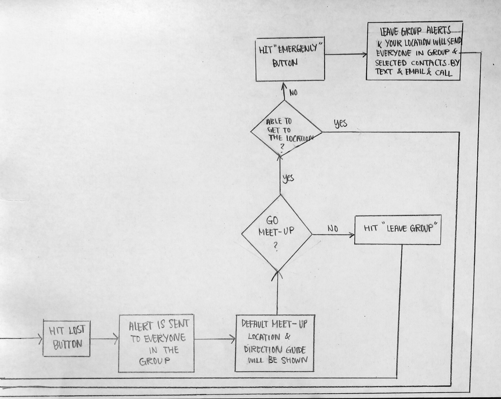

Challenge
This challenge from Zappos.com, Inc. is to conceptualize and design a solution that helps others find their friends easily under a given scenario. My goal is to solve the problem with a design which is usable, useful, and value to the users. This project is done in few days as following the MVP (Minimum variable product) structure. More features and functionability will be added in the future.
What I did
- Setting Goals and Objectives
- Identify Users and Stakeholders
- Identify Functional Requirements/ Non-functional Requirements
- Brief User Research
- Creating User Flow
- Low-fidelity Prototypes
- High-fidelity Prototypes
- Creating Wireframes
- High-fidelity Design
The goal of this app
The goal of this mobile application is to deliver fast, easy, direct, reliable, current resources for users. This app will help user to get the best result (Find their friends) from the least effort.
Target Users
Primary audience: Anyone who is attending an event with his/her friends/family
Secondary audience: Acquaintance who do or do not use this app
Their problems & needs
The constrains that they have are:
They will expect:
- Fast as finding the right meet-up location quickly
- Easy to use and function
- Correctness of direction and contact information
- Low requirement
- No delay or distraction such as advertisement
Idea & Solution
My idea is to have a platform that solve the problem without considering any phone restrictions.The meet-up location is pre-loaded by the time the event is created. The group admin is required to set the event location.Then, the app will automatically generate the hottest spot near the event location. The admin or group members are able to select recommended places or type in a meet-up location before the event start. When friends/ family agreed to join the group, the map and directions will be downloaded automatically and stored in the app. They do not need to use GPS, Data, Cell signal to view them. Other than the offline pre-set map, there will be an alternative map, pictures, keywords to help users find their meet-up spot.
When a user is lost in the group, the user can hit the "lost" button and alerts will send to everyone who is in the group.The default meet-up location will be shown on all member's phone. Members can select their status if they wish to. Also, users can hit the "leave group" button and quit anytime, the status will also shown to all members.
Feature Requirements
Function Requirements:
FR-01 The app must allow users to connect each other by contacts
FR-02 The app must allow users to create group
FR-03 The app must allow users to join group
FR-04 The app must allow users to add events
FR-05 The app must allow users to add members
FR-06 The app must allow users to remove members
FR-07 The app must allow users to see GPS and battery status of all members
FR-08 The app must allow users to set meet-up location
FR-09 The app must allow users to set default meet-up location
FR-10 The app must allow users to send status inside and outside the app
FR-11 The app must allow users to make emergency call
FR-12 The app must allow users to remove group after event
FR-13 The app must allow users to leave group
FR-14 The app must allow users check in their location
FR-15 The app shall allow users to import images
FR-16 The app may allow users to send message under chat room
FR-17 The app may allow users to backup history and view it
System Requirements:
SM-01 The app must generate hot spots locations near the event address
SM-02 The app must allow users to setup password for the security reason
SM-03 The app shall show the welcome screen when the user is the first time using it
Account Requirements:
AC-01 The app must allow user to create an account using Phone Number and email
AC-02 The app may allow user to backup history and send it to their email
User flow sketch
